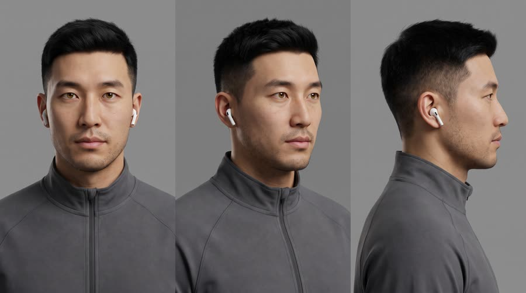
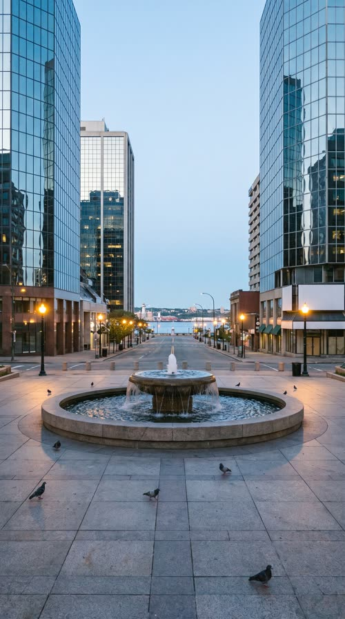
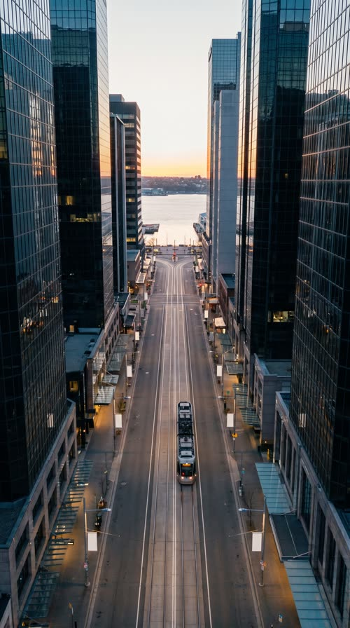

Stampede
Dawn in a sleeping city. A six storey Red Bull Sugarfree drops into the plaza fountain, and two giant red bulls charge off it down the avenue, switching the whole city on as they run.
Pure thumb stop: the brain reads a real street and an impossible object at once and has to look twice (Maybelline FOOH ran to 12M views in hours). Every frame is a pack shot, so brand recall is near total. The risk is spectacle with no reason: the stunt must dramatise the one benefit (here, the city waking up) or it is just a screensaver.
Contact sheet
One keyframe per shot, with the caption as it will appear.


Cast and world

Voice: non-speaking; breath and one laugh only


World. Calloway, a fictional North American harbour city: a stone civic plaza with a round fountain, glass towers, a long straight avenue running down to a waterfront, 6am on a still autumn morning. Streetlights still on, windows dark. Palette. Built from the can: dawn sky blue and glass silver for the whole city, the can's red and gold as the only saturated colours (the bulls, the sunrise at the end of the avenue).
Fictional brands. Calloway (city); Harbor Line (the tram whose plain silver cars appear in the background, no logo); Kettle & Oar (a corner cafe, only shown as a blank awning)
Beats
| Time | Beat | What happens |
|---|---|---|
| 0-3.6 | hook | A sleeping city at dawn. Something enormous falls out of the sky and lands in the plaza fountain with a boom. |
| 3.6-5.6 | setup | One early runner stops dead, earbud out, and looks up at it. |
| 5.6-11 | product | The reveal orbit: a six storey can dripping car-sized drops, label square to camera. Then two giant red bulls step out of a burst of gold light at its base. |
| 11-20.5 | build | The bulls charge down the avenue. Every streetlight, window and tram lights up in their wake; the runner sprints beside them, laughing. |
| 20.5-24.5 | payoff | At the waterfront the bulls leap into the rising sun and the whole skyline is switched on. |
| 24.5-30 | cta | The giant can stands in the now busy plaza; the runner holds a normal can at its base. Brand line, tagline, blank billboard filled in post. |
Screenplay
27 spoken words in 30 s. Each line keeps its intent (fixed in the template) and its wording (written for this product).
| Time | Speaker | Line | Intent (template) |
|---|---|---|---|
| 0.4-2.6 | vo (off camera) | Somebody order a wake-up call? deep, warm, amused, trailer narrator but unhurried | Hook: a playful question that frames the stunt as the answer to a morning problem. |
| 8.8-10.8 | vo (off camera) | Big morning? Bring the herd. a grin in the voice, building | Turn the stunt into the product's energy: the product brings something to life. |
| 14.8-17.4 | vo (off camera) | Caffeine helps you stay alert and focused. confident, rhythmic, riding the hooves | The functional benefit in one line, using an allowed claim only. |
| 25.0-27.4 | vo (off camera) | Red Bull Sugarfree. Same wings, no sugar. slower, landing each word, satisfied · Say: RED BULL SHUG-er-free, three clear words | Product line: name the product and its point of difference. |
| 27.8-29.6 | vo (off camera) | Wiiings without sugar. warm, smiling, stretched vowel · Say: WINGS, stretch the vowel slightly | Tagline in the brand's own words. |
Generation plan
U1 · 0 to 5.6 s · 6 s generation
Shots S01, S02, S03 · References: product can official, plaza plate, jae card, S01 keyframe as first frame
9:16 photoreal fake out of home CGI, dawn in a North American city plaza, cool blue grade, handheld street footage feel, upright frame with level horizon. Shot 1 (0 to 1.8 s): street level looking up past pigeons, the exact can from @Image1, scaled to six storeys, falls straight down out of the pale sky toward the fountain of @Image2, upright, label facing camera. Shot 2 (1.8 to 3.6 s): it lands upright and intact in the fountain, a crown of water explodes outward, pigeons burst into the air, 4 frames of camera shake. Shot 3 (3.6 to 6 s): slow push-in on @Image3 (Jae), a runner who stops dead, pulls out an earbud and stares up as mist drifts past. The can never dents, tilts or changes. Native sound: city hush, rising air whistle, sub boom, water crash, window glass rattle, pigeon wings, runner's breath. No speech. No music. All signs blank, no text.
U2 · 5.6 to 11.0 s · 6 s generation · exact-risk (short, cheap to re-roll)
Shots S04, S05 · References: product can official, plaza plate, S04 keyframe as first frame
9:16 photoreal CGI hero. Shot 1 (0 to 3 s): low angle, slow 20 degree orbit around the exact can from @Image1, six storeys tall, upright in the fountain of @Image2, label square to camera and undistorted, car-sized condensation drops rolling down and falling into the water, golden rim light. Shot 2 (3 to 6 s): a burst of gold light at the base, two giant glossy red bulls, three storeys tall, step out of the light onto the plaza, hooves cracking the stone, breath steaming, heads lowering to charge. The printed label keeps its own two small bulls; the can does not move or change. Native sound: cold aluminium creak, heavy drips on water, low rumble, cracking stone, bull snort. No speech. No music. No text.
U3 · 11.0 to 24.5 s · 14 s generation
Shots S06, S07, S08, S09 · References: avenue plate, jae card, S06 keyframe as first frame
9:16 photoreal CGI chase at dawn, upright frame, level horizon. Shot 1 (0 to 3.5 s): low head-on, two giant glossy red bulls charge toward camera down the avenue of @Image1, streetlights and shop windows switching on warm as they pass. Shot 2 (3.5 to 6.5 s): drone top-down moving with them, a wave of light spreading through the towers behind them, a plain silver tram lights up. Shot 3 (6.5 to 9.5 s): tracking beside them, @Image2 (Jae) sprints on the pavement next to a bull's foreleg, laughing, same direction of travel. Shot 4 (9.5 to 14 s): extreme wide from behind, the bulls leap off the end of a harbour pier into a huge rising sun and dissolve into gold light while the whole skyline is now lit. Bulls gallop forward only, normal gravity, no extra legs. Native sound: thundering hooves, streetlights buzzing on, wind, tram bell, a laugh, whoosh, gulls. No speech. No music. All signs blank, no text.
U4 · 24.5 to 30 s · 6 s generation · exact-risk (short, cheap to re-roll)
Shots S10 · References: product can official, jae card, plaza plate, S10 keyframe as first frame
9:16 photoreal CGI pack shot, bright morning. Slow push-in then hold on the plaza of @Image3: the exact can from @Image1, six storeys tall, upright in the fountain, label square to camera, commuters walking around its base; in the foreground @Image2 (Jae) holds one normal size can of the same design at chest height, label to camera, and grins up at the giant one. A blank white billboard on the tower stays empty. Neither can moves or changes. Native sound: busy morning plaza, fountain water, footsteps, a tram bell. No speech. No music. No text.
Sound, music, voice, captions
| 0 to 5.6 s | hush and drop | Near silence, one high sustained string note rising with the falling can, cut to nothing on the impact so the boom lands in silence, then a single low piano note. |
| 5.6 to 11.0 s | reveal | Slow brass swell in C minor under the orbit, taiko hits on each hoof as the bulls step out. |
| 11.0 to 24.5 s | stampede | Driving 128 bpm trailer percussion with galloping 6/8 toms, brass ostinato, lifting a step at the drone shot, peak at the leap into the sun. |
| 24.5 to 30 s | morning | Resolves to C major, bright brass chord and a light shaker, ring out past the last frame under the VO. |
Added sound
- 2.0 s: sub boom and water crash of the landing (the hook lives on this hit; reinforce if the native boom is thin)
- 9.2 s: first hoof strike on stone (sells the bulls as physical and marks the product turning into energy)
- vo: one deep warm male narrator recorded as a single TTS track in post over all units (units are generated with no speech); brand line uses the phonetic RED BULL SHUG-er-free and lands over the short exact risk unit U4
font: Archivo Black, size: 5.6% of frame height, color: #FFFFFF, active word: #FFD23F (the can's sun gold) on the word being spoken, shadow: hard 0 3px 0 rgba(0,0,0,.45) plus soft 0 4px 14px rgba(0,0,0,.5), position: centre, 74% down the frame, clear of the product and above platform UI, max words on screen: 3, box: False, case: uppercase, motion: each word punches in at 115% and settles to 100% over 4 frames, timed to the VO
Post text- 25.0 to 30 s: Red Bull Sugarfree / Wiiings without sugar (Archivo Black white, set into the blank billboard on the tower with perspective match and a slight bloom, fades up 8 frames at 25.0 s; tagline slides up under it at 27.8 s)
Adaptation contract
How this same concept takes any physical product.
| Product type | Where it sits in the story | Scale |
|---|---|---|
| ingested | the giant drink lands in the fountain and the city wakes as its energy runs down the avenue | giant, six storeys |
| applied | a giant tube or jar lands in the plaza and a wave of its texture rolls down the avenue, polishing every surface it touches | giant, six storeys |
| worn | a giant shoe, jacket or watch drops into the plaza and the city's statues and mannequins all turn to wear it | giant, building scale |
| handheld | a giant gadget lands and powers up, and its signal wave lights every window down the avenue | giant, six storeys |
| carried | a giant bag lands and unzips, and what is inside spills out and runs through the streets | giant, six storeys |
| home | a giant lamp, chair or appliance lands in the plaza and the whole block switches into its comfort, lights on, heat haze, steam | giant, building scale |
| consumable | a giant refill pack lands and pours into the fountain, and the fountain feeds the whole avenue | giant, six storeys |
Style bible
Look. Real city first, CGI second: shoot it like handheld street footage or a drone plate with believable lens flaws, then the giant product obeys real scale cues (shadow length, atmospheric haze, pigeons, tiny people at its base). The product is always the largest, brightest and sharpest object, label square to camera in every hero frame. One impossible event per shot, never two.
Camera. Street level 24mm looking up for scale, drone top-downs and slow orbits for the reveal, one locked-off hero orbit on the product (never a whip around the label). Camera shake only on impacts, 3 to 6 frames. Match-move feel: slight handheld drift on wides sells that it was 'filmed'.
Light and texture. Golden hour or blue hour so the product catches a single hard key and a long shadow. Rim light on the pack edges to separate it from the sky. Wet ground and glass towers to double the product in reflections. Photoreal plate texture: slight atmospheric haze with distance, mild chromatic aberration at frame edges, clean highlights on the product with physically correct condensation, no plastic CG sheen on the city.
Pacing. Impact inside 2 seconds (the product arrives), a reveal orbit held at least 2 s, then one escalation per shot that grows in scale (fountain, street, whole avenue, whole skyline). Cuts every 2 to 4 s, fastest during the chase, a held wide at the end so the product sits in its new home for the CTA.
Sound. Big physical sound design carried natively by the generations: sub impact, glass rattle, water, hooves, car alarms, pigeons. Short deep voiceover recorded as one TTS track in post. Music is a trailer style build stitched at picture cuts. Added sfx only for events the viewer must register (the landing boom, the can crack if used).
Known failures.
- the giant can loses its label or turns into a generic blue can at building scale: always pass the product reference and say 'the exact can from the product reference, scaled up', label square to camera
- the model adds a second giant can or a crushed can: say 'one single can, intact, upright, not dented'
- CG bulls leaving the can wipe the logo off the label: say the printed label keeps its two small bulls intact and the giant bulls are separate 3D animals made of glossy red
- wide city shots come back rotated 90 degrees or with a tilted horizon: say upright vertical composition, level horizon, towers vertical
- shop signs and billboards fill with fake words: say blank storefront signs, blank billboards
- scale drifts between shots (can is 3 storeys in one shot and 12 in the next): state the height in storeys in every prompt (six storeys)
- water and debris physics read as noise: one splash per shot, mid-ground, with direction stated
- the giant can floats above the fountain like a sticker: say its base sits in the fountain basin with water lapping the rim and a contact shadow
- a two-location shot (avenue plus waterfront) comes back as a collage with an inset panel: say one single seamless photograph, no inset panels, and drop the avenue plate ref for that shot
Claims and cost
Claims used (all from the product page): Caffeine helps to improve concentration and increase alertness; Same benefits of the original Energy Drink, without sugar (as 'same wings, no sugar' and the tagline)
Video estimate: 32 s of generation at $0.27/s = $8.64 first pass, $20 to 30 with retakes, plus about $1.5 music.